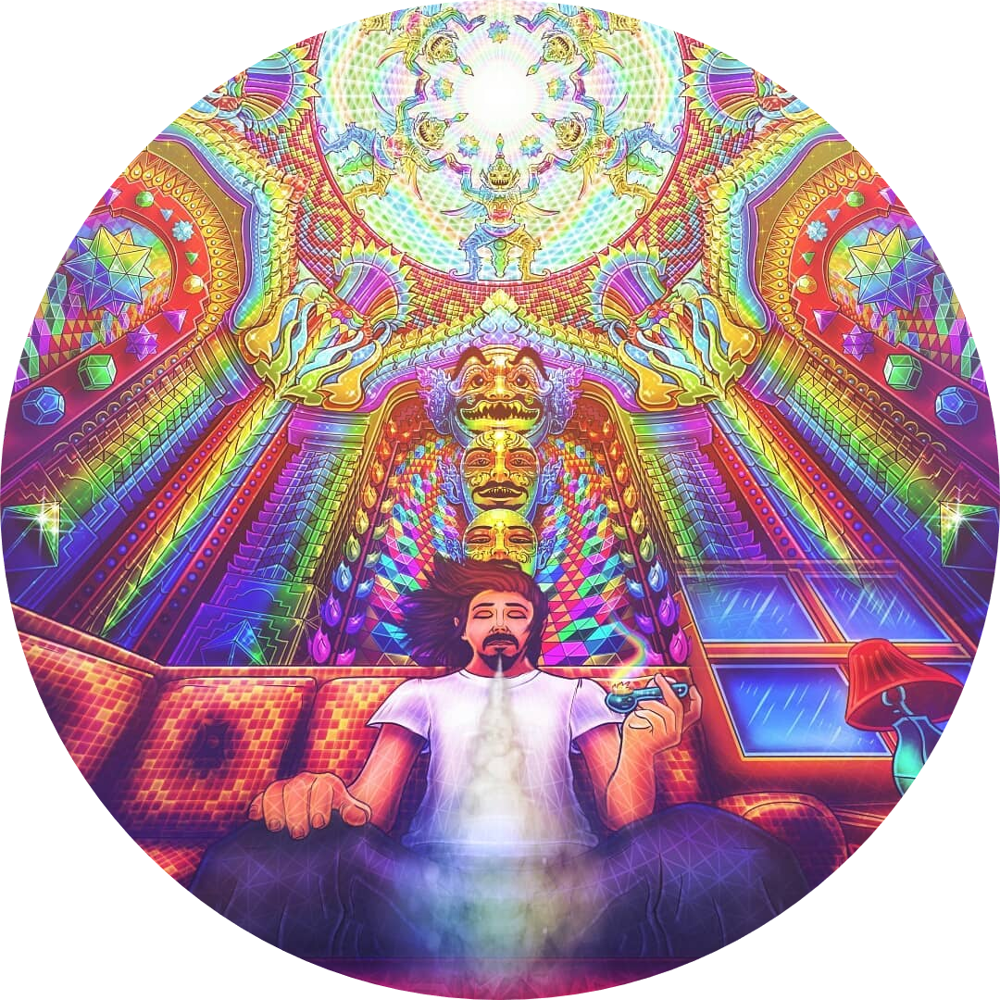
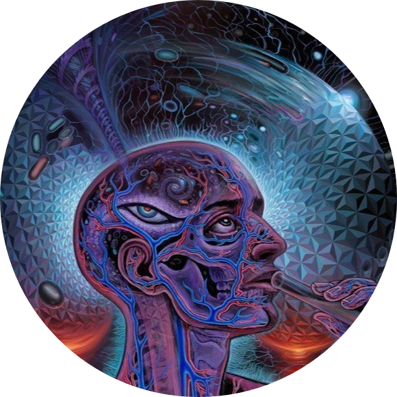
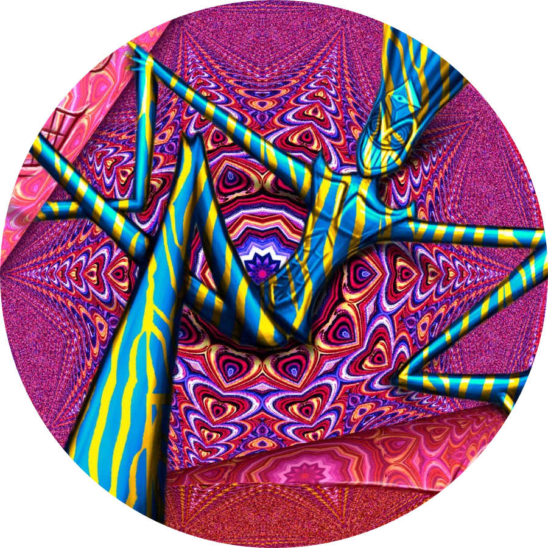
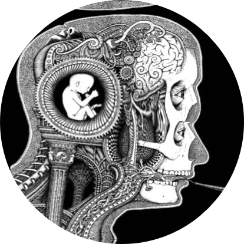
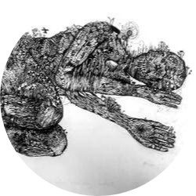
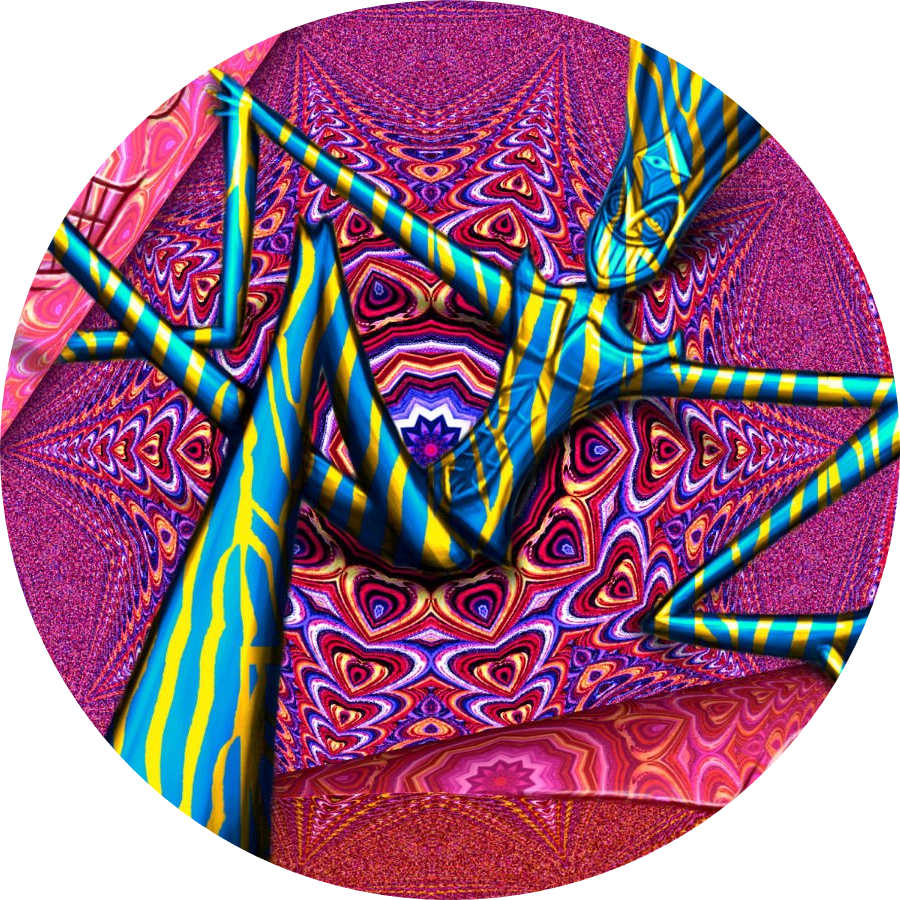
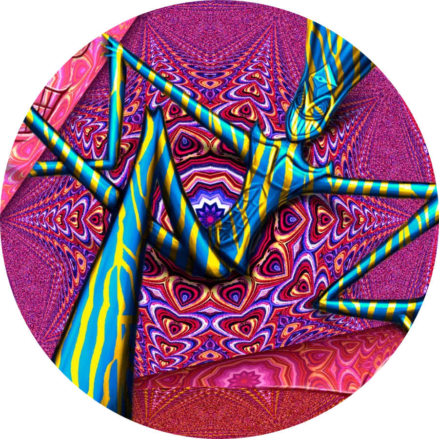

Bufo is the common name given to the secretion of the Bufo alvarius toad, also known as the Sonoran Desert Toad. The secretion are then dried to powder like substance called *DMT*. This
substance can then be smoked by the user to Experience The Bufo Toad
The Experience


*The Experience*
DMT is a powerful psychedelic that can be used as a medium to help the user attain enlightenment. This powerful experience can help the user meet entities around him . The experience can also
cause ego dissolution and a complete whiteout.
The Entities

*The Entities*
The Entities start appearing once the user is under the influence of DMT. The form of the Entities can vary based on the perception of the user ie humanoid,insectoid etc.These entities speak
in a language that cannot be described by human tongue.The Entities cannot always have a positive outcome but do not fear as we make the users experience it in a safe space with a guide that will help him through the journey.
Ego Death


*Ego Dissolution*
Ego Death is the complete meltdown of ego that the user feels after the Bufo experience.It makes the user lose the concept of himself in the world and enhance his perspective.Ego Death can
help the user overcome trauma, anxiety, stress and acts as therapy for the users.
Ego Death
*Ego Dissolution*
Ego Death is the complete meltdown of ego that the user feels after the Bufo experience.It makes the user lose the concept of himself in the world and enhance his perspective.Ego Death can
help the user overcome trauma, anxiety, stress and acts as therapy for the users.
 
*The Entities*

*The Entities*